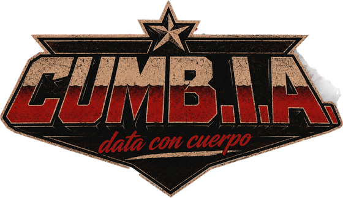

Mi sello personal de música
Mi archivo y laboratorio creativo personal: producción musical, bandas anteriores y experimentos como Cumb.I.A. — de acá vengo y de acá se nutre todo lo demás.
Lanzamientos
Desierto de Olas — "Deep Inside" (single)
Rol: Producción musical
"Séptimo" (álbum)
Rol: Arreglos y grabación de guitarra
Los Cu4tro Fantasmas — "Grandes Éxitos"
Rol: Producción musical (Angloguaraní Records) + guitarra
GDXL — "GDXL EP"
Rol: Guitarra (arreglos y grabación)
Los Invitados — "Los Invitados"
Rol: Guitarra (grabación)
Juventud Perdida — "Música Para Hijos de Puta"
Rol: Guitarra y arreglos
Juventud Perdida — "Justicia Poética"
Rol: Guitarra y arreglos

Proyecto de Instagram que combina cumbia generada con IA, memes y visuales. Primer track: "A las Barricadas" — himno anarquista, versión cumbia hecha con Suno, portada propia.
Cumb.I.A. - La cumbia del Sol (A las Barricadas - Versión Cumbia)